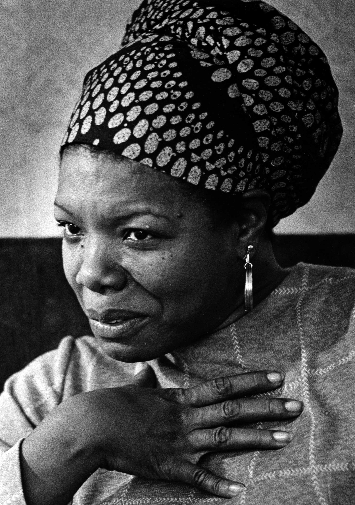

Maya Angelou was a singer, poet, and civil rights activist. Maya Angelou has 50 honorary degrees. She has produced 50 years of exceptional content, from poetry books to autobiographies, and essays to plays, movies, and tv shows. She has been a nightclub dancer, opera singer, journalist, sex worker, fry cook, and Christian conference coordinator. Her career as a writer included reading poetry at Clinton's inauguration to different parts of the world on her lecture circuit. Maya Angelou is one of the most influencial people in American history.
To the Index 